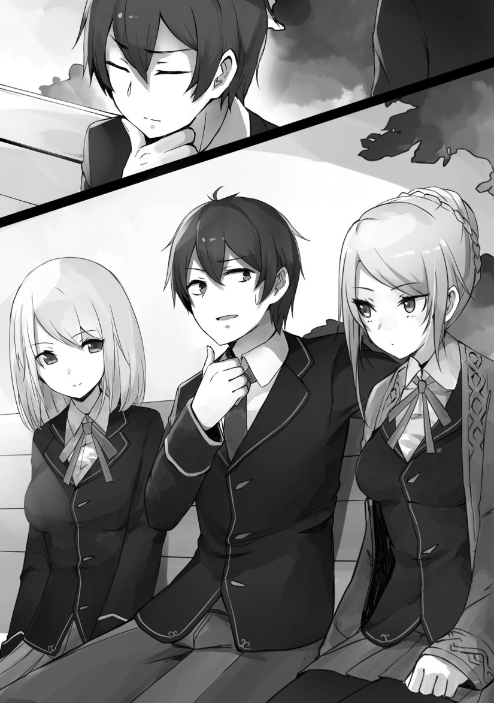

Not good.
I was brought into the royal palace. Perhaps thinking of it as just a castle with a king would be better. Though it’s called a royal court, there’s a certain atmosphere in the area. Perhaps it would do good to think about this lightly.
I put on a knight outfit with over the top decorations, my armor Arroganz was decorated the assembly hall, and to make matters worse, there were many participants.
“What the? Why are there so many people attending?”
As I was grieving in the waiting room, my parents, who came to the royal capital for this day, looked at me and wept.
…My mother was cruel on me.
“You’ve become so elegant. I used to think you were a foolish child back then, but you were actually quite wonderful. Your mother is really proud.”
My father was also crying.
“I never thought that you would become a knight this quickly. For goodness’ sake…I’m tearing up.”
My older brother and older sister wore uniforms.
“Huh? What happened to the other part of the family?”
My older brother thought it odd that Zola and the others weren’t coming, but my older sister knew from the beginning that they wouldn’t.
“They’re not going to come. In the first place, Leon is now part of an independent, separate Baltfault household. One above the sixth rank at that…”
My older brother and sister continued their conversation.
“Say what?”
“At this rate, if Leon enters the royal court, he would probably be sought after by girls.”
“Leon being sought after? Wasn’t this the guy that made the students in the whole school resent him? We don’t even know what’s going to happen once the new school term starts.”
“How foolish. He was promoted. It means that Leon was recognized by the royal palace. Only an idiot wouldn’t be able to realize what that entails.”
“In that case, I suppose that it’s fine even if he returns to the academy.”
“I don’t know about that. Wouldn’t it be rough? After all, there are some kids who got their entire fortune taken away by him.”
“I wonder what will happen. I suppose it’ll be made clear in the future.”
“You’re being noisy. I don’t know what will happen either.”
Damn it! I’ve gone and earned the hate of the students in the entire school, and returning to the academy was going to be frightening. In the first place, I never thought that I was going to return there.
If I knew I was going back, I would’ve made adjustments, and wouldn’t have done something like robbing people through a bet. Curse me and my reckless behavior!
In the worst case scenario, if it got to a dangerous point where my family would get rolled up into it, I would have had to think about getting everyone to board Luxon and escape. I got carried away.
I suddenly became aware of the crowd.
“The father of the former crown prince is the king, right?”
My father calmed down and shifted his attention to me.
“That’s only natural. Don’t act strange in front of his Majesty. If you do anything, your head will go flying.”
I ignored him and continued talking.
“I wonder how he feels about…promoting the person who beat up his son.”
My father pondered while folding his arms, and averted his gaze from me.
“…To tell the truth, it wouldn’t be enjoyable. I would hate it if it were me.”
Of course.
No matter how bad his son was, I didn’t think that he would enjoy it. I wanted to ask him what exactly he was thinking.
No wait, I actually didn’t want to know.
◇
It was the next day.
A knight was born.
It was unusual in the Holfault kingdom for someone to be officially recognized as a knight at sixteen years old and be given a rank at the same time.
His rank was above the sixth.
A success for an adventurer.
Furthermore, criticizing the crown prince for his foolish behavior also counted as one of his achievements.
In fact, it was said that he showed his ability by defeating four people from famous households, but the exact reason why he did that was unknown.
However, there was no denying that a powerful, young knight was born in the Holfault Kingdom.
Many swarmed into the royal palace to see such a knight.
It was evident that Leon was gathering much attention.
◇
It was night.
My school life would continue starting the next day, so I came to the student dorms.
I was scratching my head in front of the staff at the academy’s lobby.
“My room changed?”
The staff member at the reception desk made a stiff smile replying to me.
“R, right! Leon Fou Baltfault, you’re already a knight and a baron. You’re a student, but we took that into account.”
The room that I was shown to on a map was at a higher grade than the one before.
“I see. In that case, I’ll take the key.”
“We’ll guide you there at once! You can leave your luggage transportation to us.”
The staff member took my luggage, briskly──or rather, nervously catering to me.
The difference between how they treated me before I enrolled and how they did now was clear.
◇
I spread out onto the bed in my spacious room, staring up at the ceiling while mumbling.
“Why did things turn out this way?”
Luxon, who floated next to me, gave an honest reply.
[Isn’t this the result of having acted careless? You assumed that because I was here, you could more or less do anything unreasonable and still be okay, which proved to be fatal when you got carried away and participated in the duel. You thought that making blunders would still be fine, but you shouldn’t have have behaved violently, doing whatever you pleased. This is a matter of dealing with the consequences. You paid a large sum of money for your life, knowing that much of it would flow towards the work of the royal court. The result was a promotion, or rather, an outcome you didn’t want. Well, to put it plainly…you reap what you sow.”
“Thanks for the exact answer. If you had already noticed it while the ordeal was still in process, you should have said it out loud, you idiot.”
[Even if we did try to correct this mid-way, there wouldn’t be enough information to go off of. If I were to speak honestly, then even I’m a little surprised of this result.]
What a useless AI.
“Damn…thanks to that, I’m back to the life of having to search for a marriage partner.”
[Isn’t that fine? It’s possible that the girls’ opinions of you may have changed now that you have been promoted.]
“You think they’d change?”
[Yes. Not the ones that made bets on the duel, though. That’s likely why you’re enemies with around seventy percent of the academy’s students. I had been gathering information, and it seems that both boys and girls have been spending the summer vacation earning money through dungeons like never before.]
There were those that bet everything they owned, and fools that borrowed money. They should not have gone that far in their belief that they would win.
Well, if it were me and I didn’t know any better, then I would have also made a bet on Julian and the others.
[By the way master, as a result, there has been a lot of abusive slander about you, with people calling you things like a coward, the worst sharp-tongued jerk, and so on.]
“That’s the information you found?! So doesn’t that mean my reputation hadn’t changed for the better?! On the contrary, didn’t it get worse?!”
[I saw many that hated you, master. However, you seem to be popular amongst a portion of the boys. They talked about how you said the things they wanted to hear.”
“That makes so glad, I might shed a tear!”
Marriage had become more difficult than it had been before I enrolled in the academy.
I was definitely reaping what I sowed, but if I knew that it would have resulted in this, I would have restrained myself!
[Well, isn’t this okay? This world where women domineer over men may be tough, but marriage isn’t everything. If one doesn’t care about their reputation, they’re free to do anything other than handle marriage. The power of money is potent in particular. You could find girls who are having financial difficulties.]
“Hmm~, isn’t that cruel? If that’s the way you’re thinking, than aren’t you the worst?”
[That’s exactly the way you would solve it, master. So, I’ve prepared a mirror. Look at it and voice out complaints to your heart’s content. Your complaints and grumbles would all apply to you as well, master.]
I then saw a large mirror in the room.
…Huh? Did Luxon really prepare one? Was it just to voice its sarcasm and dislike towards me?
“You…have quite the free time.”
“I don’t want to hear that from you, master. Besides, I’m busy. Want to know? First of all, gathering information in the academy is──]
I immediately ignored the thing and closed my eyes.
At any rate, this was troubling…I didn’t think that those five would be disinherited.
Just what was going to happen from now on?
◇
Three days had passed since the opening ceremony of the new school term.
It would be hard to say that my life at the academy was going well.
The people around were avoiding me.
It was a relief that Daniel and Raymond came to give me an apology, but it would take time for our relationship to be like it was before.
Perhaps having felt indebted towards me, the two were a bit awkward when they spoke.
However, it seemed they were doing fine without me.
According to Luxon’s investigations, neither Anjie nor Livia seemed to be troubled in their academy life. Three days had passed and I still didn’t know what would happen, but people seemed to have calmed down around those two.
It seemed that Anjie was getting fed up with her followers desperately trying to regain her trust, but other than that, things were the same as before.
Livia continued studying during the summer vacation, and had already reached a level where I could not understand whatever she was saying.
She had already begun studying the lessons of the second-year class.
I was afraid of being asked to help with her studies.
I wanted to apologize and have her forgive me for pretending to be more competent than I actually was.
However, there was also a problem.
It was about Julian and the others.
They didn’t separate from Marie. While it seemed that they were no longer lovers, they had formed a group of seven, including Marie and Kyle, and challenged dungeons many times.
It seemed that Greg and Chris were trying to build up their strength so that they could have a rematch with me.
For Jilk and Brad, it seemed that their main goal was earning money, since they no longer received support from their household.
The same was true for Marie.
Marie’s viscount household had been in financial trouble from the beginning. It seemed that she was challenging the dungeons under the expectation that she wouldn’t receive support from them.
In addition, Julian was also participating with Marie and the others. They argued that they had “come together by chance to tackle a dungeon,” but that was a stupid excuse.
While my reputation plummeted drastically after the duel, it seemed that there were girls who became sympathetic towards the prince and the others, cheering them on.
All things considered, the seven of them seemed to be having fun──no wait, one of them didn’t seem to be having fun.
That person was the ringleader, Marie.
She seemed to be hiding a side of her that was suffering from her loss of status, honor, and fortune. Her other side made it seem like she was having fun.
Despite seeming like she was having fun to the people around her, Marie’s laugh was from her having to face the troubling reality.
Her shrewd movements came to an end, and nothing felt more wonderful than thinking about how this definitely wasn’t the result Marie wanted.
How refreshing. It seemed I would be able to sleep well that day.
I was sitting on a bench in the school courtyard, and while I was thinking about such things, two people sat beside me. I first assumed that they were Daniel and Raymond, but I thought differently when I noticed a certain gentle atmosphere and pleasant scent.
They didn’t smell like those guys.
I looked up and saw Livia and Anjelica sitting.

“Leon, you’re by yourself again today?”
“Thanks for rubbing salt on the wound. I’m alone today.”
“Good grief, what to do with that manner of speaking you have? Leaving that aside, if you have free time, then come with us.”
Anjie had a slightly tired expression, perhaps from having to deal with her followers.
“Come with you? Where?”
Livia seemed to have a cheerful expression.
“There’s a stall with these great, famous crepes.”
As expected of an otome game world.
It was a fantasy world of swords and magic, complete with crepes and other sweets. A gentle world for females.
A world that would be the toughest for males.
“Do they have strawberry or chocolate?”
However, my body needed some sugar, so I was also interested. This bitter world was tough for males, so I would at least eat some sweets.
Livia answered with a smile.
“They do! Their strawberry jam is popular.”
Crepes seemed like a novel concept to Anjie.
“A stall? I don’t have much experience with those. I never got to purchase something from those since my followers kept telling me that I shouldn’t eat from them.”
Most of the girl followers who said that actually ate at those stalls. I believe Luxon made a report on something like that.
The two held hands, got up, and headed towards the crepe stall.
“Leon, hurry up.”
“Hey, be quicker.”
They walked while pushing my back.
The two were gentle and cute, but they were people that I couldn’t lay a hand on.
…Wasn’t it too unreasonable to have those closest to me be the ones that I couldn’t do anything with?
The world of otome games really is tough for me.
TLN: Important announcement regarding this novel impending. Stay tuned. You can find the announcement here Disregard that announcement
Follow 2Slow2Late MTL on WordPress.com (function(d){var f = d.getElementsByTagName('SCRIPT')[0], p = d.createElement('SCRIPT');p.type = 'text/javascript';p.async = true;p.src = 'web/platform.js';f.parentNode.insertBefore(p,f);}(document));
arigato translator God
Thx for the Chapter~!!
(´｡• ω •｡`)
Thx for the chapter
thanks!
thank you for the chapter, the wait felt so long.
Thanks for the chapter~~~
Soo the king don’t get mad?
Probably mixed feelings about whole mess. Also, considering society Queen could be as dangerous or more than the King. Yes, angry Leon humiliated his son in a duel and beat crap out of him. On other hand Julian needed a good thrashing for how he treated badly not only his fiance for things she DIDN’T do but the Duke house who was his main supporter as heir just to pursue a manipulative girl with 5 other lovers. All this without considering appearances or political ramifications. Also Leon claimed “pure” reasons of concern for the kingdom along with possessing strong armor so probably will want to use that strength to help at least make up some of the loss of support Julian’s arrogance and selfishness created. Especially since Marie isn’t the Saint Livia is but a fake standing in with little or no idea of anything Livia did hat was vaguely if mentioned at all in the game. Like how she fixed relationship between Julian and Angie’s household.
No it different I read raw so how should I say the king is some who I want to smack in the face for being useless and show off.
The queen is somewhat decent tho